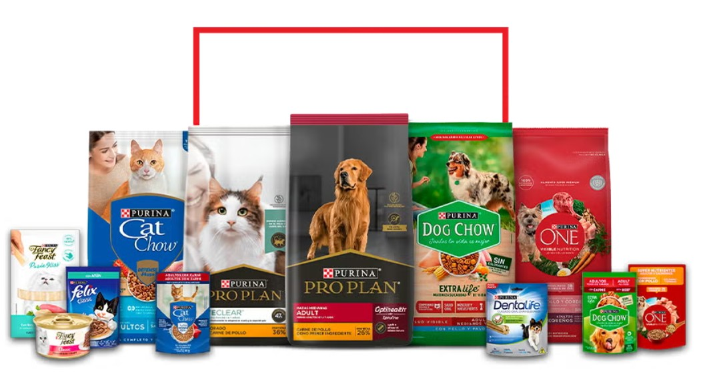
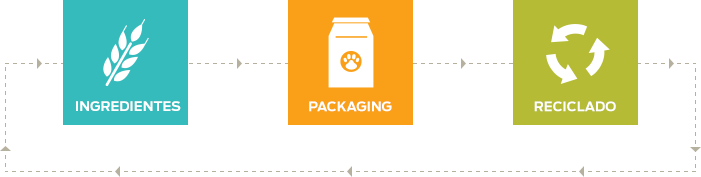
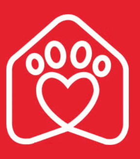

ELABORADO POR: Karla Janet y Giovanni
Explora Purina

Más sobre nosotros

Comprometidos con el planeta
Estamos comprometidos con la salud de tu mascota y el futuro de nuestro planeta.
Las mascotas en el trabajo
Tenemos algunos consejos para ti, basados en nuestra propia experiencia como en la de otros espacios laborales petfriendly.

Purina Juntos es Mejor
Tiene como objetivo introducir a perros entrenados para brindar apoyo en terapias y hospitales de México.

Purina Adopta
Hacemos llegar solidaridad a las mascotas en albergues que más lo necesitan.

Ciclo de vida
Nuestros esfuerzos de sustentabilidad abarcan todo el ciclo de vida de nuestros productos.
¿Qué es Purina®?
Somos
una compañía especializada
en la nutrición y cuidado de gatos, enfocada en mejorar su salud y calidad de vida.
Descubre cómo Purina® cuida a tu gato
con productos diseñados para su bienestar.
"Los gatos sanos y felices hacen hogares más felices"
Fuente: Purina
- Nutrición felina
- Guía de Cuidados
- Purina para gatos: marca que ofrece alimentos, consejos y soluciones para el bienestar integral de los gatos
<p>Purina cuida la alimentación y salud de tu gato</p>
Somos una compañía dedicada a mejorar la vida de los gatos y sus dueños, ofreciendo productos de calidad y orientación para su cuidado diario.

Cuidados básicos de los gatos
- Higiene
- Limpiar su arenero y cepillar su pelaje regularmente
- Salud
- Visitas al veterinario y vacunación
- Ejercicio
- Jugar diariamente para mantenerlo activo
- Descanso
- Proporcionar un lugar cómodo para dormir